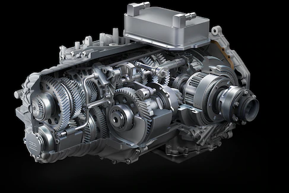

Pure and precise shifting
Every part had to earn its way onto this car, and the standard dual-clutch transmission is no different. It features lightning-quick shifts, combining the smoothness of an automatic with the action of a manual. And since there’s no deceleration between shifts, your lap times will benefit too.